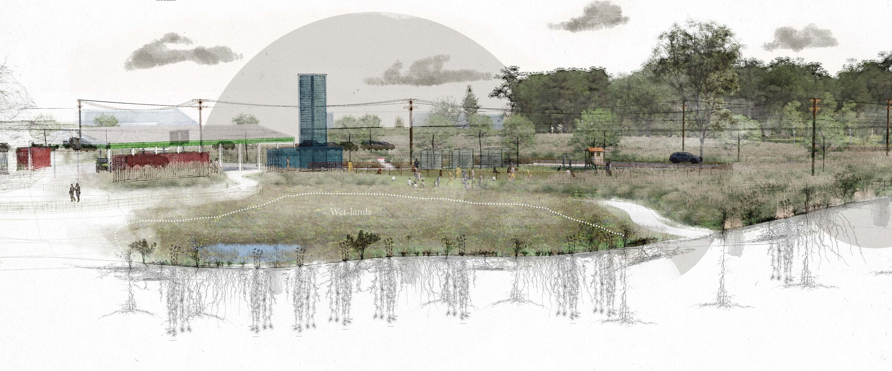

Urban Designer
Designing parks, streets, and public spaces that give communities wonderful places to gather.
About
Bryant Baugus is an urban designer with CPLA Design+Planning, working across landscape architecture and architecture projects throughout Mississippi — from civic streetscapes and campus visioning to transit-oriented redevelopment. He holds an MLA and BArch from Mississippi State University; his thesis, "Tools We Use" evaluated UAV and photogrammetry workflows for early-stage site documentation at small landscape architecture firms, later published in Architecture and presented at the CELA Conference in Portland, Oregon. He is an Associate Member of the American Society of Landscape Architects and the American Institute of Architects, holds an FAA Part 107 remote pilot license, and serves as Evening Worship Coordinator at Grace Presbyterian Church in Starkville.
Loading CV…